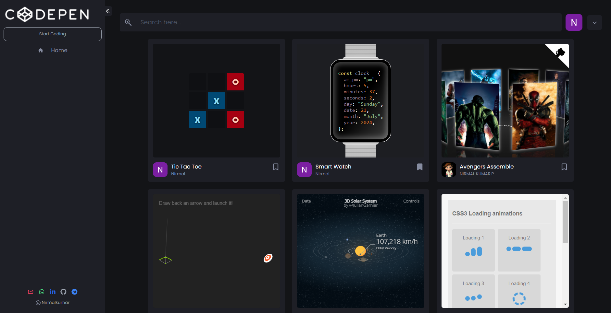
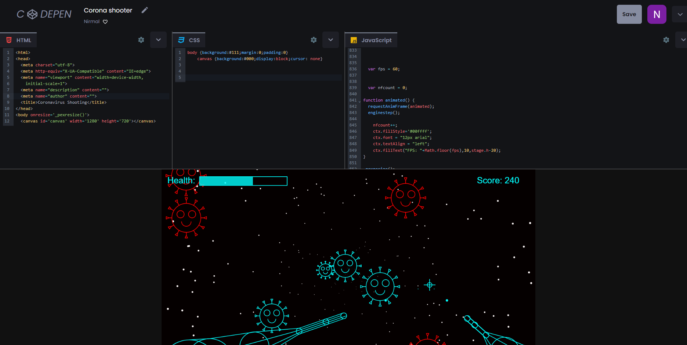

A REATIME ONLINE CODING PLATFORM FOR HTML, CSS AND JAVASCRIPT
Check my live project: https://nk-codepen-clone.web.app/
Introduction
The proposed real-time online coding platform is designed to provide a seamless and interactive environment for coding enthusiasts and developers to write, test, and save their HTML, CSS, and JavaScript code simultaneously. This platform is built with modern web technologies such as HTML, CSS, JavaScript, and React, ensuring a responsive and dynamic user experience. By leveraging Tailwind CSS, the platform achieves a sleek and intuitive design, enhancing user engagement and usability. This system aims to facilitate learning and development by allowing users to see the immediate results of their code, promoting an interactive and hands-on approach to coding education. A key feature of the platform is its integration with a real-time database, which ensures that users' code and projects are saved and updated instantly. This real-time synchronization allows users to access their work from any device without the risk of losing their progress. The platform also incorporates Redux for state management, providing a consistent and reliable user experience by managing the complex state of the application efficiently. Additionally, the platform supports real-time collaboration, enabling multiple users to work on the same project simultaneously, fostering teamwork and collaborative learning. Security and user authentication are paramount in this platform. It offers multiple authentication methods, including Google and GitHub login options, as well as traditional email and password-based authentication. This multi-faceted approach to authentication ensures that users can choose their preferred method of accessing the platform while maintaining a high level of security. The combination of these advanced features makes the real-time online coding platform a robust and versatile tool for both novice coders and experienced developers, aiming to enhance their coding skills and project management capabilities.
Install packages
To make this project successful, you need to install some libraries and packages.Open the terminal and install all the necessary libraries listed below.
npm
The npm (Node Package Manager) library is an essential tool for JavaScript developers, providing a vast repository of packages and modules that can be easily integrated into projects. It facilitates the management of dependencies, allowing developers to install, update, and configure libraries and frameworks efficiently. npm's registry hosts thousands of open-source projects, enabling the community to share and collaborate on code. By using npm, developers can streamline their workflow, ensure compatibility between various components, and maintain consistent project environments across different development stages. Overall, npm enhances productivity and fosters innovation in the JavaScript ecosystem. This commaand will install npm globally in your system.
npm install -g npm
Yarn
Yarn is a popular package manager for JavaScript that was developed by Facebook in collaboration with Google, Exponent, and Tilde. It offers a reliable and secure way to manage project dependencies, ensuring consistency across different environments by creating a yarn.lock file. Yarn enhances performance by using parallel installation, offline caching, and an optimized network resolution strategy. Additionally, it provides a clear and concise output, automatic checks for integrity, and compatibility with the npm registry, making it an excellent tool for managing large-scale JavaScript projects with complex dependency trees. This command will install yarn globally in your system.
npm install --global yarn
Download Project
Download the complete project and then when do few steps which I have mentioned below to make this project successfull.
Download ProjectNOTE: Replace with your Google and Github API key before run the code. Hide your API key before posting it in the Github or in any other platforms for security purposes.
Run the Server
Yarn start is used to run the server in our system. so that the project can run in localhost:3000.
yarn start
Firebase project and Google Authentication
- Go to and SignIn in firebase website https://console.firebase.google.com/
- Click create a project.
- Give the project name.
- Now Firebase project is created successfully.
- Click web icon option and give a name for your website
- Copy the API Keys shown below in the code.
- In the build click Authentication and get started.
- Click Google and enable it. Select a email and save it.
- In settings click create multiple accounts for each identity provider.
- Go to firestore database and create database. Start in production mode.
- Go to Rules and paste the code.
rules_version = '2';
service cloud.firestore {
match /databases/{database}/documents {
match /{document=**} {
allow read, write: if true;
}
}
}
- In your terminal add firebase
yarn add firebase
- In Your project settings. copy the code and paste it in .env file
REACT_APP_API_KEY=Replace_with_your_API_KEY
REACT_APP_AUTHDOMAIN=Replace_with_your_AUTHDOMAIN
REACT_APP_PROJECTID=Replace_with_your_PROJECTID
REACT_APP_STORAGEBUCKET=Replace_with_your_STORAGEBUCKET
REACT_APP_MESSAGESENDERID=Replace_with_your_MESSAGESENDERID
REACT_APP_APPID=Replace_with_your_APPID
Github Authentication
- Go to GitHub profile settings. Click developer options.
- Go to OAuth Apps. Click New OAuth App
- Give the Application name. In homepage url paste the below link
http://localhost:3000/home/
- Go to firebase Authentication. In sign in methods click Github and enable it.
- There is URL below copy the url and paste it in the Authorization callback URL in Github page. Then Register the application.
- Copy the client ID. Click generate new client secret. A client secret will be generated. Copy it and paste it in client secret.
- Add redux in chrome extensions
Deploying Project in Firebase
Install firebase CLI
Running npm i firebase-tools installs the Firebase CLI (Command Line Interface) globally on your system, providing a suite of tools to manage Firebase projects directly from the command line. With Firebase CLI, you can perform tasks such as initializing new projects, deploying web apps and functions, managing database rules, and more. This installation is essential for developers working with Firebase services, allowing them to streamline their workflow by executing commands for configuration, deployment, and maintenance without needing to navigate through the Firebase Console.
npm i firebase-tools
Firebase login
Login with with firebase account.
firebase login
Install firebase CLI globally
The npm install -g firebase-tools command installs the Firebase CLI globally on your system using Node.js' package manager, npm. This allows you to use Firebase's suite of tools from the command line, enabling you to manage Firebase projects and perform various tasks such as deploying apps, initializing projects, managing Firestore, and more. The -g flag ensures the tools are available system-wide, making commands like firebase init, firebase deploy, and firebase serve accessible from any terminal session on your computer.
npm i firebase-tools
Initialize the firebase
firebase init is a command used in the Firebase CLI to set up a new Firebase project or modify an existing one. When you run firebase init, it guides you through a series of prompts to configure Firebase services such as Authentication, Firestore, Functions, Hosting, Storage, and more. This command helps you to initialize your project with the necessary Firebase configurations by creating essential files like firebase.json and .firebaserc. These configuration files store the settings and preferences for the Firebase project, enabling streamlined deployment and management of your app's backend services.
firebase init
- Choose Hosting: Configure files for firebase hosting and (Optinally) set up github deploys.
- Select use an existing project
- Select the project name.
- what do you want to use your public directory? Type "build"
- Configure as a single page-app (rewrite all URLs to/index.html)? Type "Yes"
- set automatic builds and deploys with github? Type "No"
Yarn Build
This will build your app in entire production build.
yarn build
Firebase Deploy
Firebase Deploy is a command provided by the Firebase CLI that enables you to easily deploy your web applications and other Firebase services to the Firebase Hosting platform. By running firebase deploy, you can upload your project's files to Firebase Hosting, making them accessible over the web.
firebase deploy
SignUp Page
The SignUp page in this React application is a comprehensive and user-friendly interface designed to facilitate user registration and authentication. It features a minimalist and aesthetically pleasing layout with a primary emphasis on usability and functionality. The top section prominently displays the application logo with a subtle opacity effect, adding to the visual appeal. Central to the page is the invitation message "Join With Us!", followed by a form contained within a rounded, shadowed box that enhances focus and accessibility. This form includes input fields for email and password, each accompanied by relevant icons from the react-icons library, providing clear visual cues for the user. The form employs the UserAuthInput component, ensuring consistent design and validation across fields. The page features real-time validation feedback, particularly for email input, enhancing user experience by preventing form submission errors. Additionally, it offers toggling functionality between sign-up and login states, making it versatile for new and returning users. This is achieved through conditional rendering that switches the form's purpose and accompanying call-to-action messages. Error handling is robust, with an animated alert system that informs users of issues like invalid credentials or account lockouts, which auto-dismisses after a brief period, maintaining a clean interface. The page integrates social sign-in options using Google and GitHub, providing alternative authentication methods for users who prefer these platforms. The social sign-in buttons are visually distinct and utilize motion.div from the framer-motion library to offer interactive animations, enhancing user engagement. Below the form, the page features seamless navigation links to contact methods including Gmail, WhatsApp, LinkedIn, GitHub, and Telegram, each represented by intuitive icons. Clicking these icons opens the respective applications, making it easy for users to reach out for support or networking. At the bottom, the page includes a copyright notice, crediting the developer and adding a professional touch. Overall, this SignUp page is designed with attention to detail, ensuring it is not only functional but also visually appealing and easy to use, fostering a positive user experience.

Home Page
The Projects page is a robust, dynamic component designed with a variety of features to enhance user experience and accessibility. This responsive page leverages React, Redux, and Framer Motion to present a seamless interface that adapts well across different screen sizes. The core functionality revolves around displaying project cards, which are essentially the user's saved outputs. Each project card showcases an iframe containing the output of the user's project, making it interactive and visually engaging. The iframe height is dynamically adjusted to fit the content, ensuring a clean and uncluttered presentation. One of the key features of this page is the search filtering technology, which enables users to quickly find projects based on their search terms. The filtering mechanism is case-insensitive, making it easy for users to locate projects by their titles regardless of the letter case. The search functionality is tightly integrated with Redux to manage the state effectively, ensuring that the filtered results are updated in real-time as the user types in the search input. Each project card is thoughtfully designed to include the project title, the user's display name or email, and a profile image or initial. The profile image is enhanced with a hover effect, scaling up slightly to draw attention. This feature adds a personal touch to each project card, allowing users to easily identify their own projects or those of others. Additionally, the card includes a bookmark icon, which can be toggled to mark projects as favorites. The bookmark state is visually represented by switching between filled and outlined bookmark icons, providing a clear indication of the user's preferences. The page layout is flexible, using flexbox and CSS classes to ensure that the content is well-aligned and spaced, making the user interface intuitive and easy to navigate. Motion effects, provided by Framer Motion, add an extra layer of interactivity, making the elements responsive to user actions such as tapping and hovering. This creates a smooth and engaging user experience, encouraging interaction with the project cards. Overall, the Projects page is a comprehensive, user-friendly feature that not only displays the user's outputs in an organized manner but also incorporates essential functionalities like search filtering, dynamic content display, and personalized interaction through bookmarking and user identification. These features collectively make it a powerful tool for users to manage and showcase their projects effectively.
Coding Page
The Coding page is a robust and versatile coding environment designed to enhance your web development experience by allowing you to simultaneously code in HTML, CSS, and JavaScript. This feature-rich interface is built to streamline the process of writing and testing web applications by integrating powerful tools and a user-friendly design. The page is divided into three primary sections for HTML, CSS, and JavaScript, each equipped with a code editor powered by CodeMirror, which offers syntax highlighting, auto-completion, and error checking. As you type your code, the editors instantly update the output section, providing real-time feedback and allowing you to see the results of your changes immediately. This real-time preview is invaluable for testing and debugging, ensuring that you can quickly iterate on your design and functionality without needing to switch between different windows or tabs. One of the standout features of the Coding page is the flexible and intuitive layout, facilitated by the SplitPane component. This allows you to resize the sections both vertically and horizontally, providing a customizable workspace that adapts to your needs. Whether you prefer a larger code editor area or more space for the output preview, you can easily adjust the panes to suit your workflow. Additionally, each section is equipped with a settings menu accessible via the FaChevronDown and FcSettings icons. These menus offer convenient options, such as the ability to clear the code in any of the editors with a single click. This is particularly useful for starting fresh or removing unwanted code without manually selecting and deleting text. The clear option enhances productivity by simplifying code management and reducing clutter. Furthermore, the Coding page includes robust integration with Firebase, enabling seamless saving and retrieval of your projects. The save option, activated by the 'Save' button, commits your current code and project details to the Firebase Firestore database. Each project is stored with a unique identifier, along with metadata such as the title and user information, ensuring that your work is securely saved and easily accessible. This feature is essential for collaborative projects or situations where you need to access your work from different devices. Additionally, the user interface incorporates user profile details and a favorite toggle option, allowing you to mark and prioritize your most important projects. The integration with Firebase also ensures that your favorite status and project details are preserved across sessions, providing a cohesive and efficient coding experience. Overall, the Coding page offers a comprehensive and flexible coding environment that caters to both beginner and advanced web developers.
NOTE: Replace all the API keys and create your own firebase account before running the project.